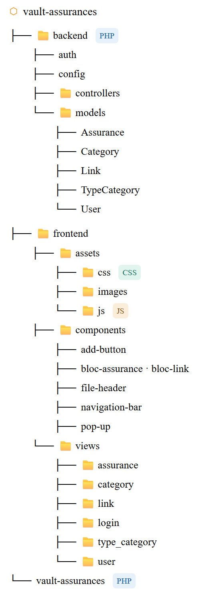

Présentation et évaluation de savoir-faire techniques
Cette partie permet de présenter et évaluer les savoir-faire techniques ...Développer une application web en PHP/MySQL ou Combiner différents langages (PHP/MySQL, PHP/HTML, ...)

Savoir-faire élémentaires : S'auto-former sur de nouveaux langages et outils , Créer une base de données et sécuriser les informations qu'elle contient , Lier le backend et le frontend d'une application web (en utilisant le modèle MVC) et Structurer le développement d'une application web et coder intelligemment .

Trace 1 : Aborescence de l'application webComme expliqué dans le contexte, le sujet du stage est de créer une application web afin de stocker des accès à des assurances. De plus, l'application doit être créée de A à Z et ensuite rattachée à un site web WordPress déjà existant.
Pour se faire, en amont du développement et pour me permettre de gagner un temps considérable, je me suis renseigné sur les langages les plus propices à utiliser en fonctions des demandes et contraintes de ce projet, par le biais de nombreux tutos, recherches (sur le web ou en échangeant avec des IA) et tests.
En regard de ceux-ci, mon choix s'est porté sur l'utilisation de MySQL pour la gestion de la base de données (car sécurisé et déjà manipulé lors de ma formation) combiné au langage PHP pour la programmation. Ce langage étant nouveau pour moi, je m'en suis donc le plus possible imprégnié (via des recherches et de nombreux tutos pratiques) avant de commencer le développement afin de le structurer au mieux.
De plus, le projet devant être rattaché à Wordpress, je me suis aussi renseigné sur comment développer au mieux mon application afin que cette étape soit facilitée. Pour cela, j'ai utilisé un nouvel outil : Local by Flywheel. Celui-ci permet de simuler l'environnement WordPress ne local et donc d'éviter les mauvaises surprises lors du passage sur l'hébergeur.